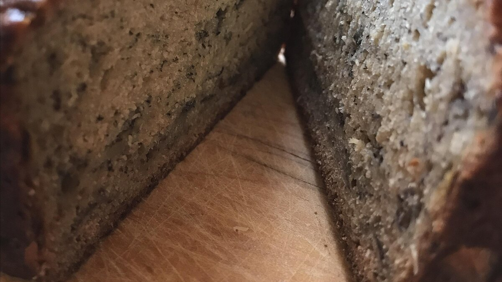

Banana Bread Recipe

How to make a healthy-ish Banana Bread
- Prep: 15 mins
- Servings: 12
- Cook: 1 hr 5 mins
- Yield: 1 loaf
- Cooking Time: 1 hr 20 mins
Ingredients List for 12 Servings
- 2 cups of all purpose flour
- 1 teaspoon of baking soda
- 1/4 cup butter
- 2 eggs, beaten
- 2 1/2 cups of mashed overripe bananas
- Preheat Oven to 350F (175 degrees C). Lightly grease a 9" x 5" inch loaf pan
- In a large bowl, combine flour, baking soda and salt. In a separate bowl, cream together butter and brown sugar. Stir in eggs and mashed bananas until well blended. Stir banana mixture into flour mixture; stir just to moisten. Pour batter into prepared loaf pan.
- Bake in preheated oven for 60 to 65 minutes, until a toothpick inserted into center of the loaf comes out clean. Let bread cool in pan for 10 minutes, then turn out onto a wire rack.
Nutrition Facts: Per Serving: 229 calories; protein 3.8g; carbohydrates 34.8g; fat 8.8g; cholesterol 51.3mg; sodium 222.9mg.